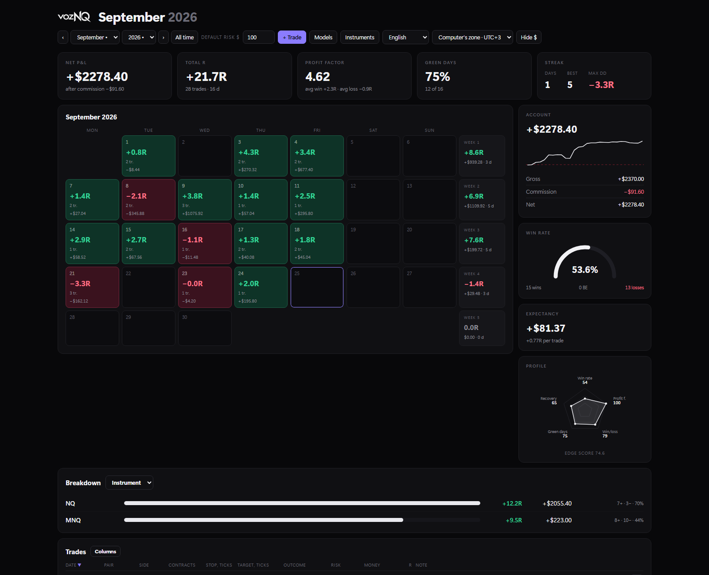
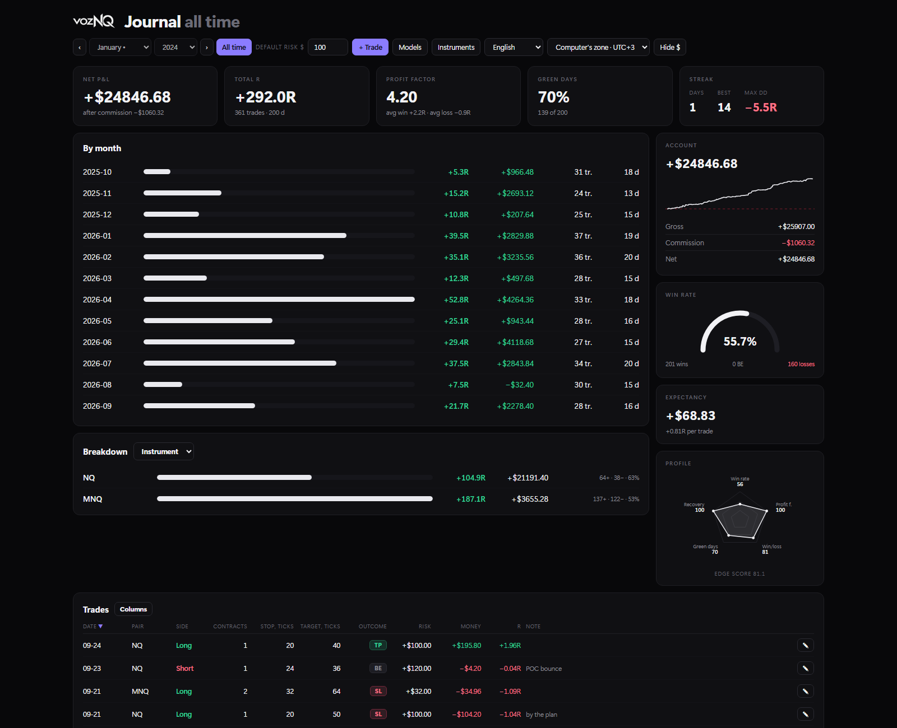
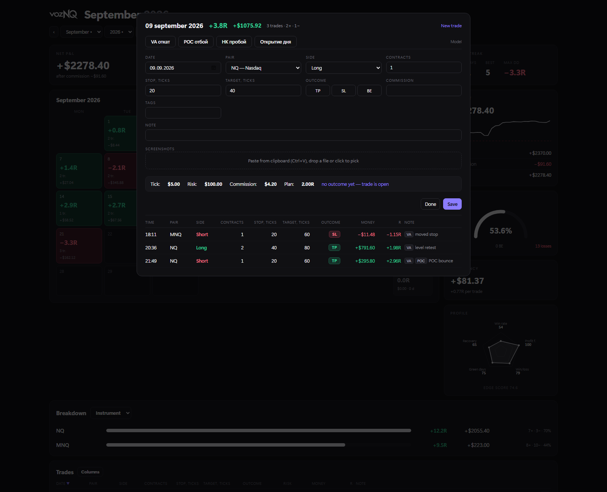
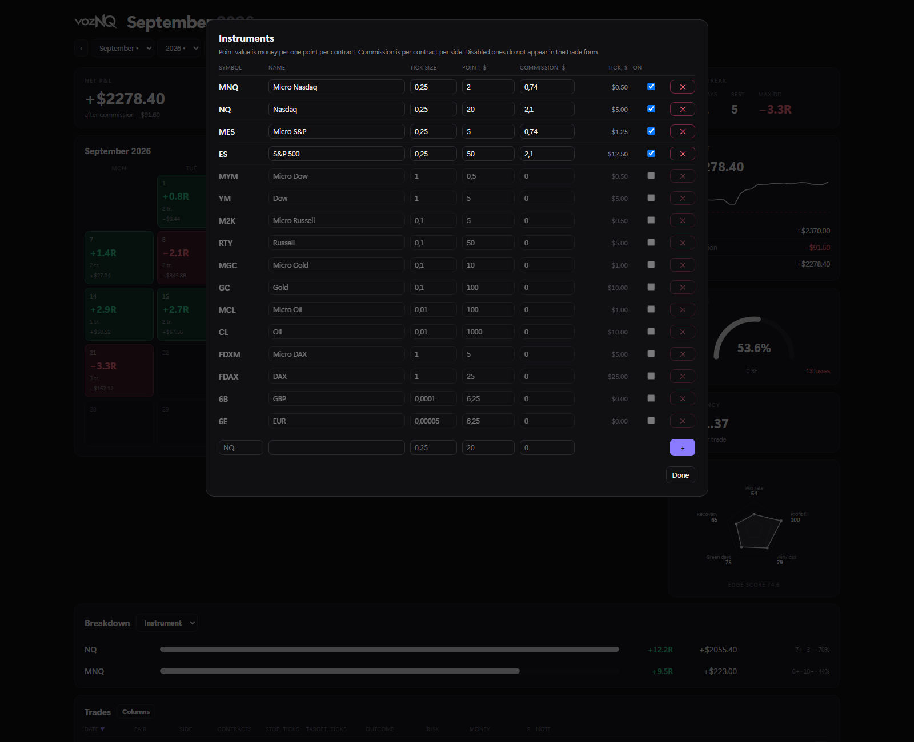
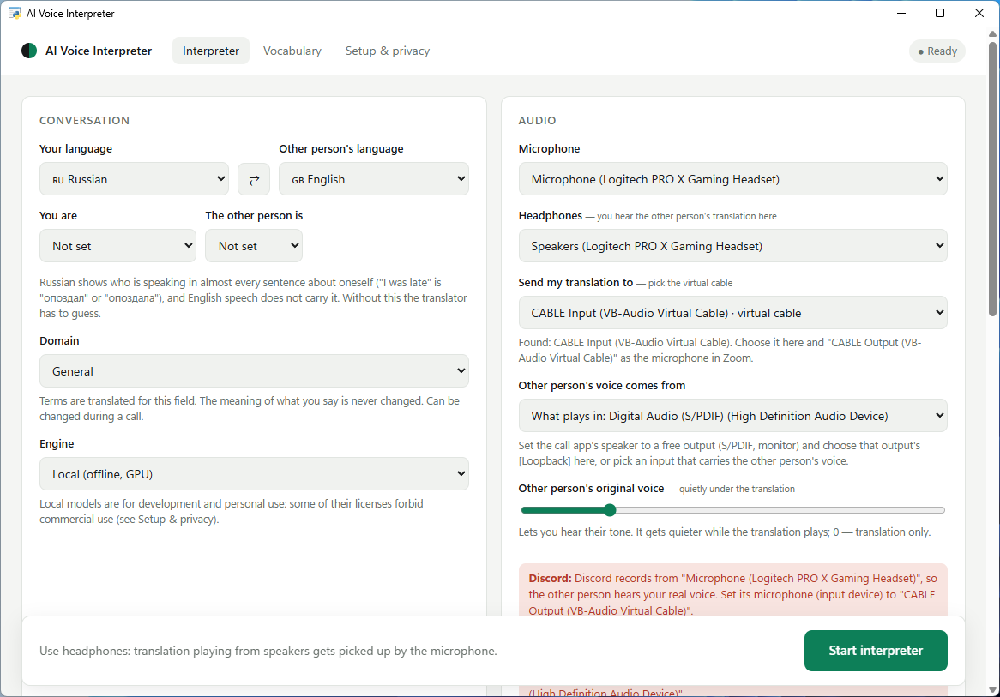
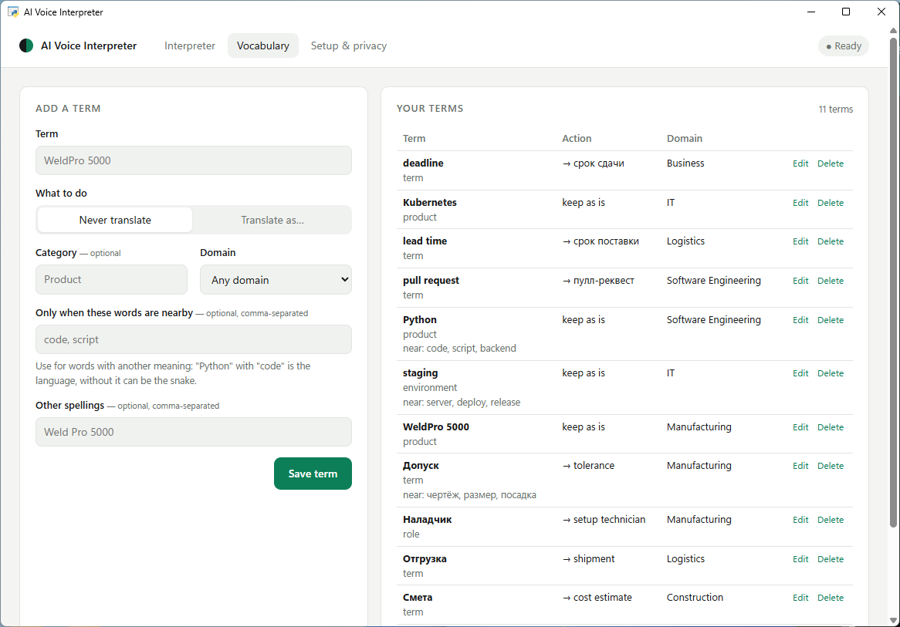
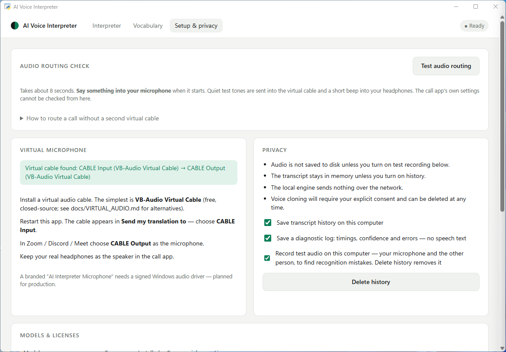

4
products running,
not prototypes
not prototypes
Portfolio · Romania / Ukraine · open to remote, UK, USA, Europe
AI Product Developer / AI Solutions Engineer / AI Automation Specialist
Four products so far. One runs on a live trading account every day, one has paying subscribers, one puts a replaced face on a live stream in ~100 ms, and one translates a conversation faster than the other person can finish a sentence. Every film and screenshot on this page comes from the running application — nothing here is a mockup. Four products in production today, with more in development.
Every trade is stored as a distance in ticks, not as a number of dollars. Switch the contract or the size and the money, the R-multiples and the whole statistic recalculate themselves — instead of quietly becoming wrong, the way a spreadsheet does.
Walkthrough — 30 s: logging a trade, the month calendar, what the breakdown answers. Open the file ↗

Month — calendar, curve, profile
All time — 361 trades, 200 days
One day — trades and outcomes
Instruments — ticks and commissionYou speak Russian and the other person hears English in a generated voice, both directions, while the call keeps going. Recognition, translation and speech all run on the machine — the conversation never leaves the room.
Walkthrough — 30 s: the path from microphone to translated voice, and where the latency goes. Open the file ↗

The window — languages, audio, engine
Vocabulary — terms that must not drift
Setup & privacy — routing check, what is storedDetection, 106 landmarks, identity embedding, generation and face parsing all run on every single frame of the webcam feed, and the result goes straight into OBS as a clean window. No plugin, no virtual camera driver, nothing to install into OBS.
Walkthrough — 30 s: detection, the 106 points, the swap, and the hand-off to OBS. Open the file ↗
“AI-generated face effect” is burned into every output frame and there is no option to remove it. A face swap that hides what it is would be a different tool for a different purpose, and I did not want to build that one.
You do not pick a specialisation and you do not learn commands. Send a photo, a voice message, a spreadsheet or a link, and the right model gets the job — including when the subject changes mid-conversation and back again.
Photos, screenshots and scans. Voice messages — straight to the model, with no transcription step in between. Video and GIFs. PDF, docx, xlsx, csv and source files, complete with their tables. A bare URL, which it reads before answering.
The bot starts with a single provider key — the free Gemini one is enough. Any platform without a key simply does not appear in the menu, instead of appearing and failing. There are no buttons that look alive and do nothing.
How this was built
These are products, not exercises. Two of them earn money, one handles a live trading account, and each took months. This page shows what exists and that it works; the code stays private.
I will walk through any part of it in a call, demo it live, or share a specific module on request.
I define the product, decide how it must behave, test every build against real use, and write the implementation together with an AI coding tool. The requirements, the architecture decisions, the acceptance and the bug hunting are mine; a large share of the typing is not.
What that leaves me good at: turning a vague idea into a precise specification, finding the case where the thing breaks, and shipping something a real person uses the next morning.
Unavailable features are shown disabled with the reason next to them. When the camera hands over the wrong pixel format, the app says exactly that instead of leaving you with a low frame rate and no explanation.
Latency is measured, not estimated. The translation quality figure quoted here is the one from the held-out set — not the higher one from the set the rules were tuned on.
What comes next
All four are built, tested and in real use — one on a live trading account every trading day, one with paying subscribers. None of them is a prototype waiting on a final feature.
More are being built now. They are added here on the same terms as these four: running, measured, and shown from the real application.
Products that are used keep growing. The journal gains a new breakdown when a month of trading calls for one; the bot gains models as providers release them.
A project is listed only once it is in real use by someone. That is why there are four rather than fourteen, and why the number will rise slowly.
Last updated 25 September 2026 · the commit history on GitHub shows how often this page changes.
Contact
A call works in English or Russian. If you want to see something specific — the tick maths, the latency breakdown, the tariff tests — say which, and I will open that part on screen.
{kind=link}
{kind=link}
{kind=link}
{kind=link}
{kind=link}
{kind=link}
{kind=link}